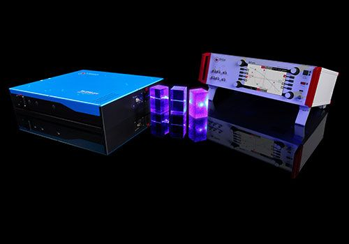

Where to Buy Equipment for Nonlinear Frequency Conversion
Definition: the conversion of input light to light of other frequencies, using optical nonlinearities
See also our encyclopedia article on nonlinear frequency conversion!
Related products: nonlinear crystal materials, frequency doubling, frequency tripling, frequency quadrupling, RGB sources
17 suppliers for equipment for nonlinear frequency conversion are listed in the RP Photonics Buyer's Guide. Both manufacturers and distributors can be registered.
| Suppliers with Ad Package | |
|---|---|
| Company | Product Description |
 Waldstr. 17 78073 Bad Dürrheim Germany www.rp-photonics.com Social: Facebook, Google+, LinkedIn, YouTube E-mail: Tel.: +49 7726 3 89 22 60 Fax: +49 7726 3 89 22 62 | We offer advice on all aspects of nonlinear frequency conversion, e.g. the design of frequency conversion devices, choice of nonlinear materials, simulation of nonlinear conversion. Also: specialized in-house training courses, tailored to your needs. |
 All wavelengths. Lochhamer Schlag 19 82166 Gräfelfing Germany Quality: ISO 9001:2015 www.toptica.com Social: Facebook, LinkedIn, YouTube E-mail: Tel.: +49 89 85 83 70 Fax: +49 89 85 83 72 00 |  TOPTICA provides tunable continuous-wave laser systems including nonlinear frequency conversion for accessing the wavelength range from 190 nm to 4000 nm. The conversion processes are second-harmonic generation and optical parametric generation. |
| Your products are not listed here? Get an ad package! | |
| All Suppliers | |
|---|---|
| From your country: | |
6–14#, YanYang Fuzhou China | |
| Outside Asia: | |
Savanoriu Ave. 235 Vilnius 02300 Lithuania | |
2310 University Way #1–1 Bozeman, MT 59715 United States | |
 APE Angewandte Physik und Elektronik GmbH Plauener Straße 163–165 / Haus N 13053 Berlin Germany | |
P. N. Lebedev Physical Institute 11 Fizicheskaya Street 108840 Troitsk, Moscow Russian Federation | |
 c/o Optolita UAB Mokslininku str. 11 08412 Vilnius Lithuania Quality: ISO 9001:2015 | |
2380 Qume Drive, Suite F San Jose, CA 95131 United States | |
Ester Technopole, 1 Avenue d'Ester 87069 Limoges Cedex France | www.glophotonics.fr Tel.: +33 6 40 42 22 73 |
GWU-Lasertechnik Vertriebsges. mbH Bonner Ring 9 50374 Erftstadt Germany | |
181 Legrand Avenue Northvale, NJ 07647 United States | |
Via IV Novembre, 116 21058 Solbiate Olona (VA) Italy | |
Mokslininku str. 6A 08412, Vilnius Lithuania | |
Waldstr. 17 78073 Bad Dürrheim Germany www.rp-photonics.com Social: Facebook, Google+, LinkedIn, YouTube E-mail: Tel.: +49 7726 3 89 22 60 Fax: +49 7726 3 89 22 62 | We offer advice on all aspects of nonlinear frequency conversion, e.g. the design of frequency conversion devices, choice of nonlinear materials, simulation of nonlinear conversion. Also: specialized in-house training courses, tailored to your needs. |
Rudolf-Breitscheid-Str. 1–5 35037 Marburg Germany | www.sacher-laser.com Tel.: +49 6421 30 50 |
2724 Sawbury Blvd. Columbus, OH 43235 United States | |
Heinrich-Hertz-Str. 11 41516 Grevenbroich Germany | |
All wavelengths. Lochhamer Schlag 19 82166 Gräfelfing Germany Quality: ISO 9001:2015 www.toptica.com Social: Facebook, LinkedIn, YouTube E-mail: Tel.: +49 89 85 83 70 Fax: +49 89 85 83 72 00 | TOPTICA provides tunable continuous-wave laser systems including nonlinear frequency conversion for accessing the wavelength range from 190 nm to 4000 nm. The conversion processes are second-harmonic generation and optical parametric generation. |
Click on a company entry to mark it. Product entries of suppliers having an ad package are displayed with a logo, product description and product image. | |
Users: if any displayed information is incorrect (e.g., a listed supplier does not offer such products) or legally problematic, please notify RP Photonics so that the problem can be solved.
Suppliers: you can report modified data using a form, which is provided via the button "Edit profile data" on your company profile page. You can obtain ad package for getting a much improved visibility and many more leads.
If you are a supplier and want to be listed, please use the registration form.
An already registered supplier can use a customized form to report the full list of offered photonics products. That form is reachable with a link at the bottom of the supplier's profile page.
Anyone, not only suppliers themselves, can report additional suppliers. If possible, please provide a web address showing that this supplier indeed offers such products.
If you like this buyer's guide, share it with your friends and colleagues, e.g. via social media: